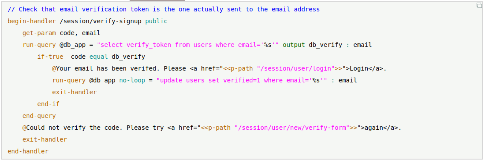

With Golf, you can develop web applications and services quicker and with a near-flat learning curve. Plus, experience faster run-time performance and smaller memory footprint.
Golf is a language, tools and application server for building and deploying web services and back-end solutions for any business. Its purpose is rapid and easy development of low-maintenance, memory-safe and high-performance business applications. It's about much less coding and much higher readability of code.
Golf is built with industry-standard Free Open Source libraries, extensible, and licensed under Apache 2 Free Open Source.
Read more about Golf.
Hello World with Golf.
Install Golf. See Documentation. Source at github.com (note each change log is described on Golf blog).
Current version is 193. Check Blog for change log. This release passed 2283 automated functional tests.
Contact email golf-lang@proton.me
Golf is formerly Gliimly; it's the same project and Gliimly has been renamed to Golf!
Example of Golf code (from SaaS example):

Blog articles and examples:
Releases: